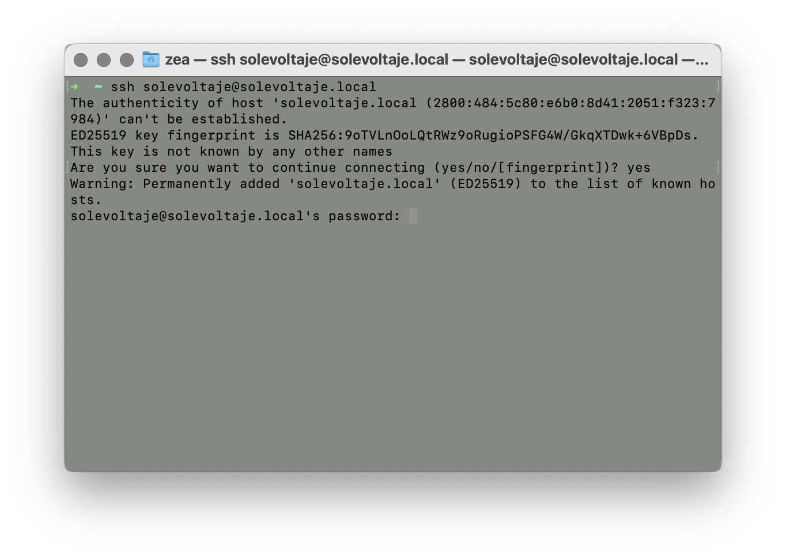
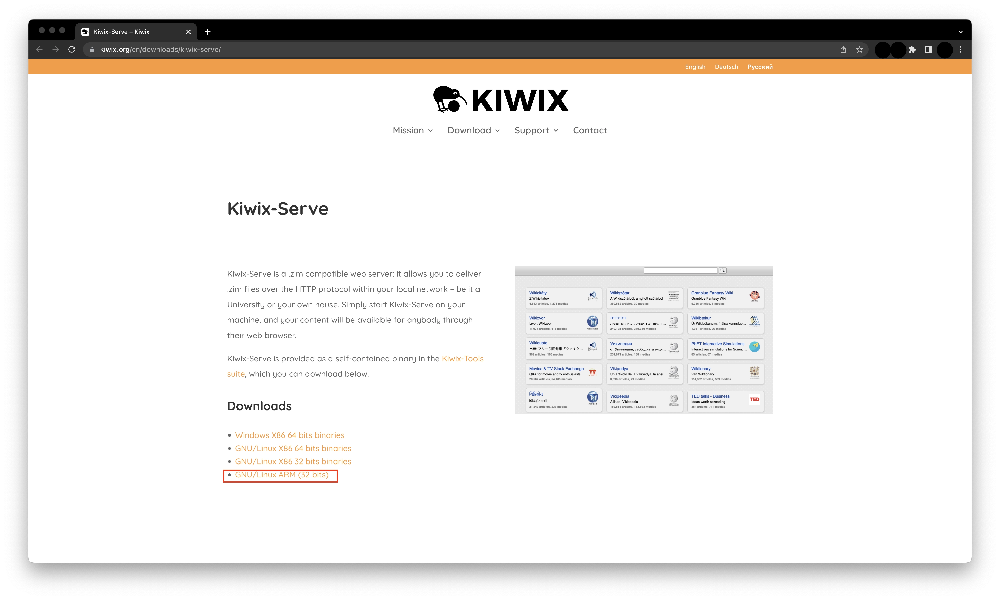
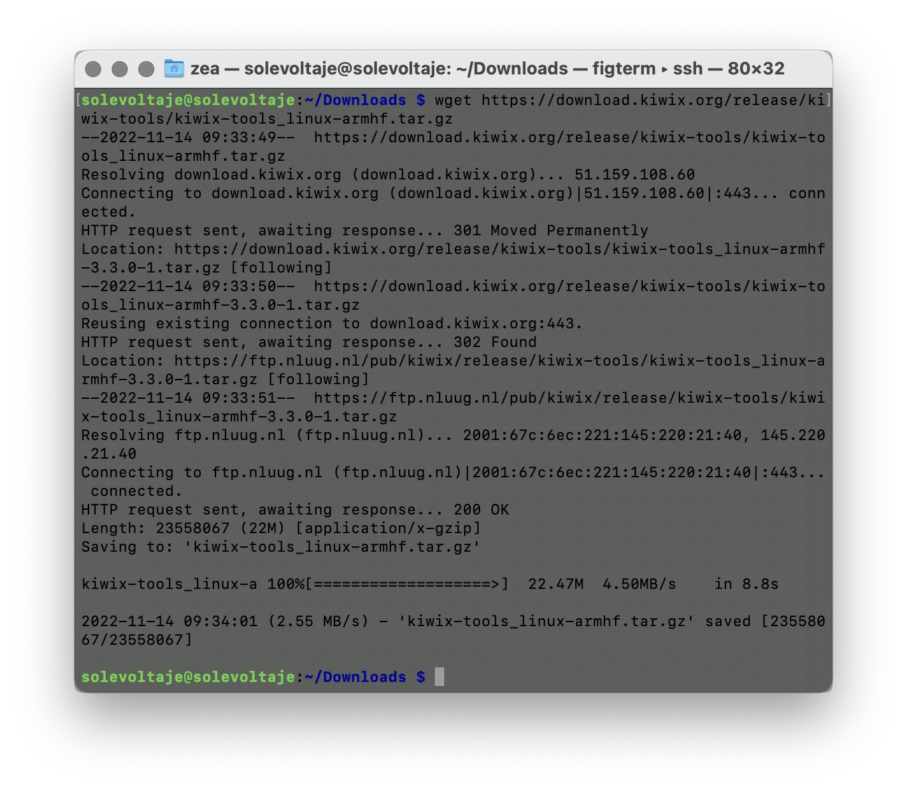
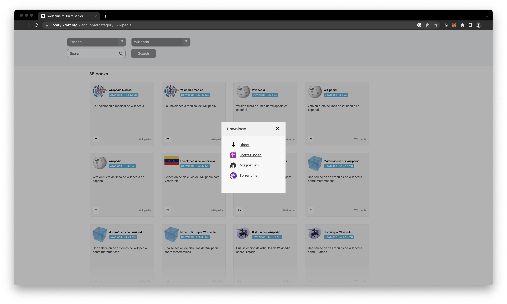
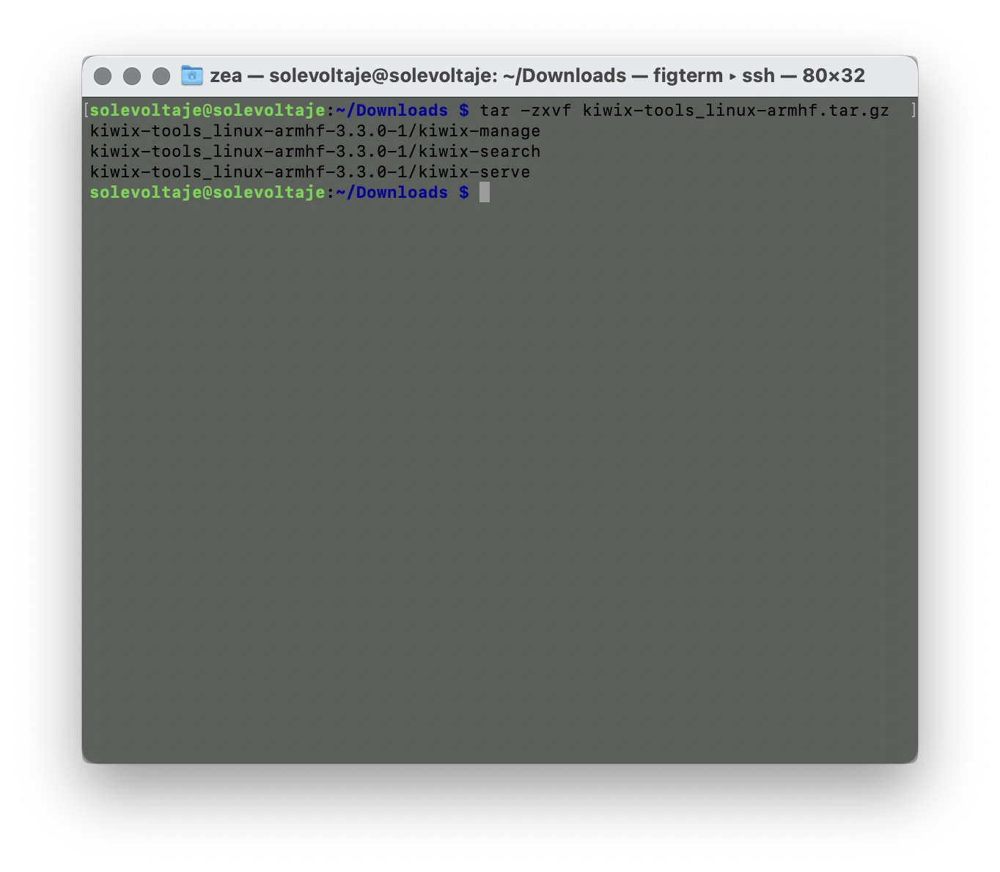
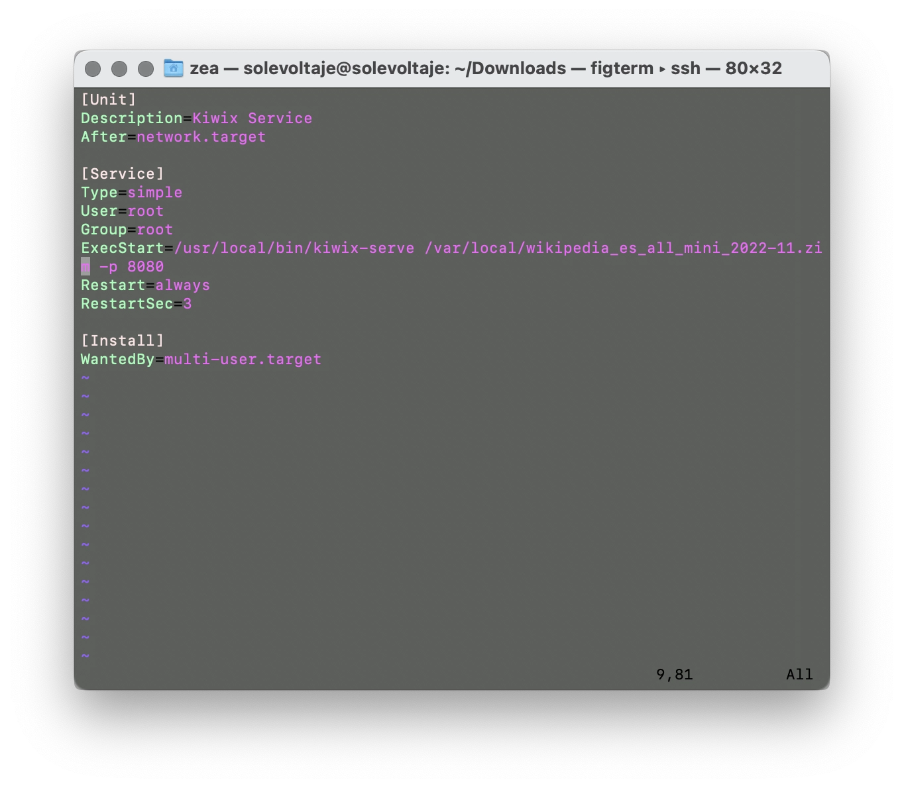
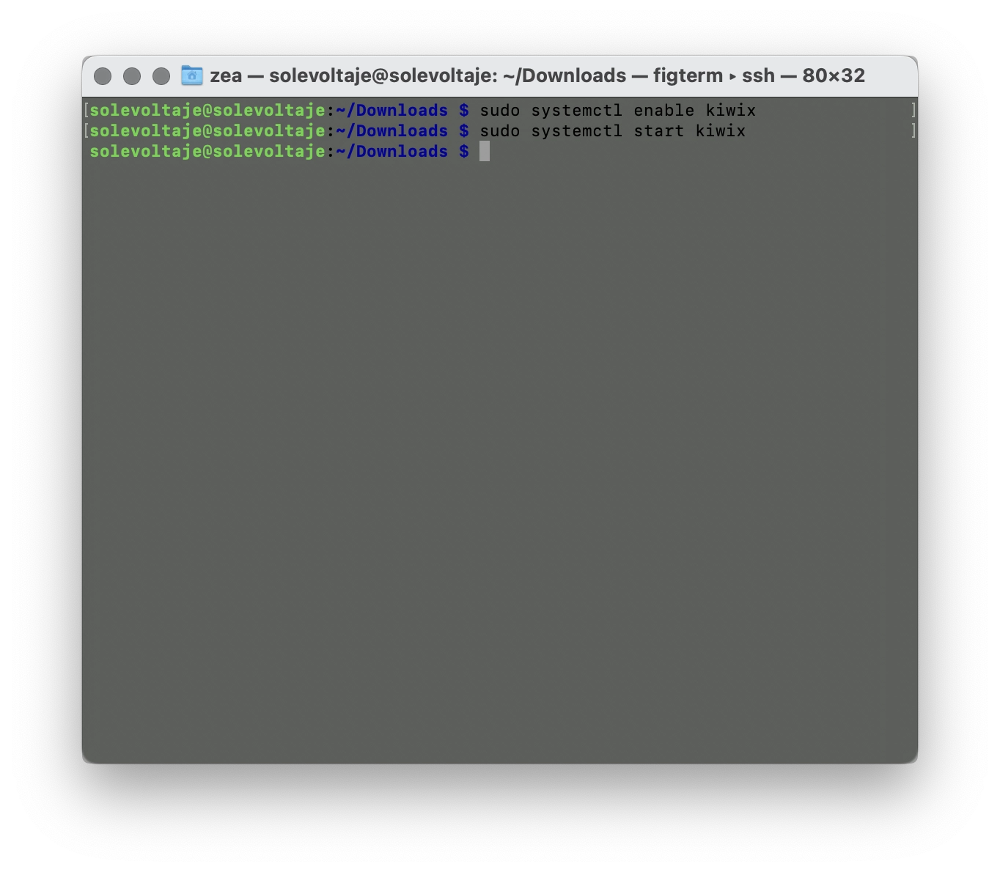
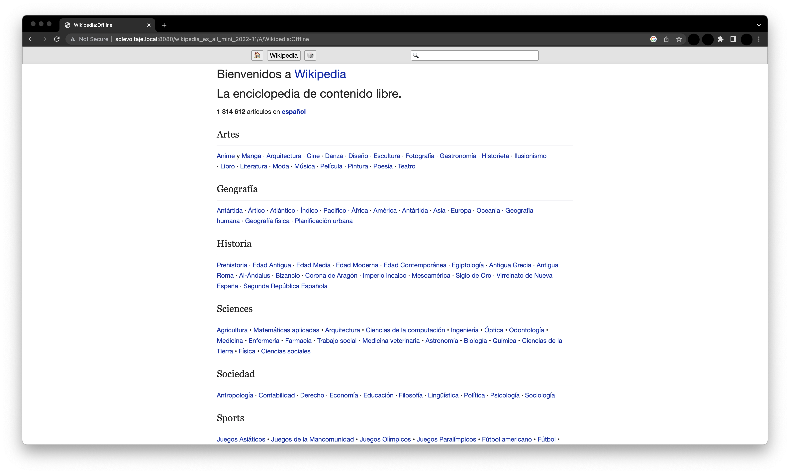

¡Hola! Soy Gabriel y soy artista. Me gusta la tecnología y soy uno de los primeros cacharreros de SOLE Colombia. No soy un experto, pero he aprendido a punta de prueba y error, ¡y así es como mejor se aprende!
¿Qué es la Wikipedia de bolsillo?
Imagina que pudieras meter la biblioteca más grande del mundo en una cajita que cabe en tu mano. Eso es Kiwix: un programa que guarda toda la Wikipedia (con sus textos e imágenes) para que la consultes aunque no tengas ni un poquito de internet.
¿Para qué sirve?
Tener una Wikipedia de bolsillo en tu Raspberry Pi → te permite llevar el conocimiento a donde sea: una escuela rural, un centro comunitario o tu propia casa. Es como tener un pozo de agua propio en lugar de esperar a que llueva; la información siempre está ahí, lista para cuando alguien tenga una Gran Pregunta.
¿Qué necesitas?
- Tu Raspberry Pi ya funcionando (como si fuera el edificio de nuestra biblioteca).
- Un computador para darle las instrucciones.
- Conexión a Internet (solo por esta vez, para descargar los libros).
- Mucha paciencia: bajar toda la Wikipedia toma tiempo, ¡mejor si tienes a alguien con quien tomarse un tinto mientras esperas!
¿Cómo hacerlo?
Paso 1 → Conéctate a tu biblioteca remota
Antes de empezar, asegúrate de que tu Pi esté encendida. Vamos a hablarle desde nuestro computador usando una Terminal → e iniciando una conexión SSH →. Es como mandarle un mensaje por radio a alguien que está dentro del edificio.

Paso 2 → Descarga al “bibliotecario” (Kiwix)
Kiwix es el encargado de buscar la información. Primero, vamos a descargar sus herramientas. Copia y pega esto en tu terminal:
wget https://download.kiwix.org/release/kiwix-tools/kiwix-tools_linux-armhf.tar.gz

Paso 3 → Trae los libros (la Wikipedia comprimida)
Ahora vamos por el contenido. Vamos a bajar una versión de la Wikipedia en español. Es un archivo pesado (unos 3.3GB), así que aquí es donde entra el tinto y la charla.
wget https://download.kiwix.org/zim/wikipedia/wikipedia_es_all_mini_2022-11.zim
Ánimo: si el internet está lento, no te desesperes. Una vez termine, ¡no volverás a necesitar internet para leer esto nunca más!
Paso 4 → Organiza los estantes de la biblioteca
Ya tenemos los archivos, ahora hay que ponerlos en su sitio. Vamos a descomprimir las herramientas del bibliotecario y moverlas a la carpeta de “ejecutables” de la Pi.
- Descomprimir:
tar -zxvf kiwix-tools_linux-armhf.tar.gz - Mover a su sitio:
sudo mv kiwix-tools_linux-armhf-3.3.0-1/* /usr/local/bin

Paso 5 → Ubica el libro de la Wikipedia
El archivo .zim (que es como un libro gigante comprimido) debe ir a una carpeta especial para que el bibliotecario lo encuentre rápido:
sudo mv wikipedia_es_all_mini_2022-11.zim /var/local/Paso 6 → Contrata a un bibliotecario que nunca duerme
Para que no tengas que prender el programa cada vez que reinicies la Pi, vamos a crear un “servicio”. Esto hará que Kiwix arranque solo apenas conectes la Pi a la corriente.
Crea el archivo de configuración:
sudo nano /etc/systemd/system/kiwix.servicePega este contenido adentro (usa las flechas del teclado y Ctrl+O para guardar, Ctrl+X para salir):
[Unit]
Description=Kiwix Service
After=network.target
[Service]
Type=simple
User=root
Group=root
ExecStart=/usr/local/bin/kiwix-serve /var/local/wikipedia_es_all_mini_2022-11.zim -p 8080
Restart=always
RestartSec=3
[Install]
WantedBy=multi-user.target
Vas bien: ¡estás a punto de terminar! Solo falta darle la orden de encendido.
Paso 7 → ¡Enciende los motores!
Ahora dile a la Pi que reconozca este nuevo servicio y lo inicie de una vez:
sudo systemctl enable kiwix
sudo systemctl start kiwix
Paso 8 → Abre tu biblioteca desde cualquier equipo
¡Listo! Ahora, desde cualquier celular o computador conectado a la misma red de tu Pi, abre el navegador y escribe: http://solevoltaje.local:8080.

¿Cómo saber si esta solución funciona?
Si al entrar a la dirección ves el buscador de la Wikipedia y puedes navegar por los artículos, ¡lo lograste! Tienes una enciclopedia entera viviendo dentro de tu pequeña Raspberry Pi.
Otros Internets posibles
Con tu Wikipedia de bolsillo, ya puedes organizar sesiones de SOLE en cualquier parque, montaña o salón comunal, sin importar si hay señal de celular. Estás democratizando el acceso a la información y demostrando que el conocimiento no tiene que depender de una suscripción mensual.
Soluciones recomendadas
- ¿Cómo instalar un servidor web en un computador de bolsillo? →
- ¿Quieres compartir tu internet sin cables? →
Recuerda que en Voltaje ⚡⚡ puedes encontrar muchas soluciones más para conectarte sin miedo a usar el internet en grupo. ¡Anímate a seguir aprendiendo! Ver más soluciones →